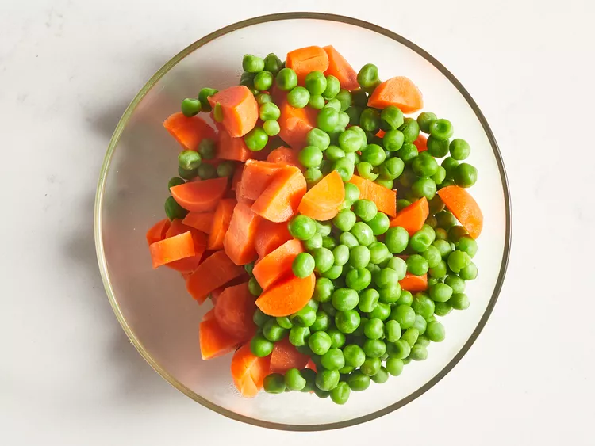
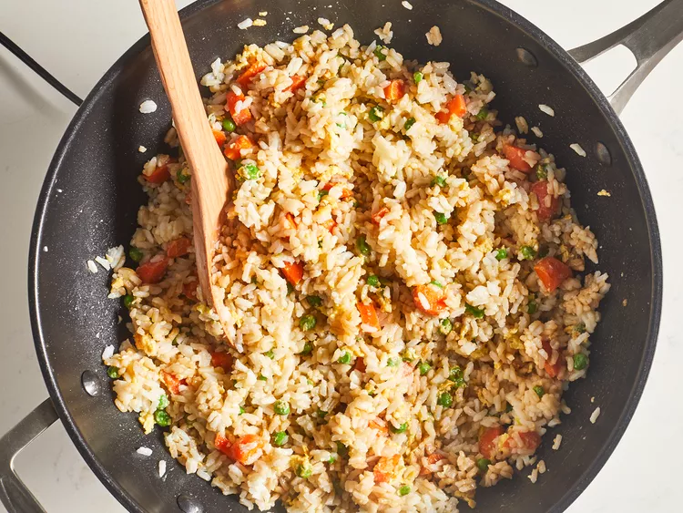

Easy Fried Rice Recipe

Easy Fried Rice
Fried rice is a traditional Chinese preparation of cooked rice, vegetables, protein, soy sauce, and aromatics.
Ingredients
- 2/3cup chopped baby carrots
- 1/2cup frozen green peas
- 2 tablespoons vegetable oil
- 1 clove garlic, minced, orto taste (Optional)
- 3 cups leftover cooked and chilled white rice
- 1 tablespoon siy sauce, or more to taste
- 2 teaspoons sesame oil, oe to tatse
Directions
- Step1
Assemble ingredients

- Step2
Place carrots in a small saucepan and cover with water. Bring to a low boil and cook for 3 to 5 minutes. Stir in peas, then immediately drain in a colander

- Step3
Heat a wok over high heat. Pour in vegetable oil, then stir in carrots, peas, and garlic; cook for about 30 seconds. Add egg; stir quickly to scamble eggs with vegetables

- Step4
Stir in cooked rice. Add soy sauce and toss rice to coat. Drizzle with sesame oil and toss again

- Step5
Serve hot and enjoy!